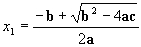

// P31_1.cpp This C++ program computes the value of a to the power of
b (a^b) for three cases.
#include<iostream>
using namespace std;
int main(void)
{
int i = 0, p =
1;
int a = 2, b = 4;
while(i < b)
// computing 2^4
{
p = p * a;
i++;
}
cout << a << " to
the power of " << b << " is = " << p << endl;
i = 0;
p = 1;
a = 3, b = 3;
while(i < b)
// computing 3^3
{
p = p * a;
i++;
}
cout << a << " to
the power of " << b << " is = " << p << endl;
i = 0;
p = 1;
a = 5, b = 4;
while(i < b)
// computing 5^4
{
p = p * a;
i++;
}
cout << a << " to
the power of " << b << " is = " << p << endl;
return 0;
}
The heart of this program is the part in red font. Imagine, you wanted to compute hundred of these calculations in a program. For now, it seems that we have to repeat several lines, which are almost identical, hundred times. But, we may have a better option. Here is a question for you to think about. In program P31_1.cpp, all variables are declared as int. Could you do the same computation for real values, i.e., could you make changes in that program such that it would compute something like 2.35.48?
There is a predefined function in C++ that computes a number to the power of another. The function is called pow. This function will take two numbers as its arguments and will compute one to the power of the other and will return the result which is referred to as value returned. For example, in the above program, to compute 34, we can use p = pow(3,4). Here, 3 and 4 are the arguments tothis function and the result, is the value returned which is assigned to p. Using this predefined function, the above code can be simplified significantly. Please note that in order to use the pow predefined function, you need to include the cmath directive, i.e. #include<cmath>
Exercise 3.1
Modify the P31_1.cpp program and use the predefined function pow
to
compute the a^b power. Call your new program ex31.cpp.
Note that the pow function allows us to compute a real number to the power of another real number as well. Here is the definition of the pow function:
pow - computes powers It takes two parameters of type double, a and b and its value returned is of type double as well, p = pow(a,b)
Exercise 3.2
We can further improve the new program using a while loop, so
that it asks the user to input an a and a b (basically of
any type) and computes the pow(a, b) to compute p
= pow(a,b) and displays the result. Call your new improved program
ex32.cpp.
There are more predefined functions in C++, here are some of them:
abs - computes absolute value
It takes one parameter of type integer, a,
and its value returned is of type integer as well. p = abs(a)
fabs - computes absolute value
It takes one parameter of type double, a,
and its value returned is of type double as well. p = fabs(a)
labs - computes absolute value
It takes one parameter of type long, a,
and its value returned is of type long as well. p = labs(a)
sqrt - computes square root
It takes one parameter of type double, a,
and its value returned is of type double as well. p = sqrt(a)
ceil - ceiling (round up)
It takes one parameter of type double, a,
and its value returned is of type double as well. p = ceil(a)
floor - floor (round down)
It takes one parameter of type double, a,
and its value returned is of type double as well. p = floor(a)
As you may remember in Lab2, you were asked to solve the quadratic equation. The solutions to a quadratic equation, ax2 + bx + c = 0, are:

The possible solutions were discussed in Lab2. Here, we only mention that before you compute these two roots, you had to make sure that the value under the radical was not negative and that a was not zero.
Exercise 3.3
Write the C++ statements that compute x1 and
x2
using
3
calls to predefined functions. Hint: you need to compute one square
root and two powers, i.e., you will use the sqrt once and the pow
twice.
Round up and Round down Functions
Sometimes, you may want to round your numbers up or down. There
are two predefined functions that are used for this purpose. The
function ceil will round up a given real number to its next whole number
and function floor will round down a given real number to its lower whole
number.
Examples:
if x = 34.3 then y = ceil(x) is 35.0
if x = 34.3 then y = floor(x) is 34.0
Exercise 3.4
Answer the following questions:
A) What are the ceil
and floor of 34.6?
B) What are the ceil
and floor of -33.2?
C) Round 34.2, 34.6, -33.2
and -33.7.
D) Suggest a method to round
a number using ceil or floor, then apply it to the numbers
in part C.
Absolute Value of Integer and
Real Values
In C++ we have two functions that are used to find the absolute value
of an integer or a real value. The first one is called abs
that is used to compute the absolute value of an integer.
Example: x = -4, then y = abs(x) will be 4.
The other function is fabs that computes the absolute value
of a float or double type number.
Example: x = -3.43, then y = fabs(x) will be 3.43.